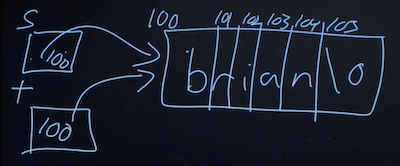

Class notes: Memory
Table of Contents
1 Strings
We've been using helpful functions from the CS50 Library, like get_int or
get_string, to get input of a specific type from the user. These functions are
generally tricky to write, because we want to prompt the user over and over
again, if the input they give us isn't actually valid.
Today, we'll look into the string type. As we learned last week, a string is
just an array of characters, stored back-to-back. But let's investigate what a
string variable actually is.
Let's open compare0.c:
#include <cs50.h> #include <stdio.h> int main(void) { // Get two integers int i = get_int("i: "); int j = get_int("j: "); // Compare integers if (i == j) { printf("same\n"); } else { printf("different\n"); } }
As expected, if we provide the same values for \(i\) and \(j\), we see that they're the same.
In compare1.c, we'll try to do the same with strings:
#include <cs50.h> #include <stdio.h> int main(void) { // Get two strings string s = get_string("s: "); string t = get_string("t: "); if (s == t) { printf("same\n"); } else { printf("different\n"); } }
Hmm, no matter what we type in for our strings, our program thinks they are different.
It turns out, string is not actually a data type in C. The word "string" is
common in computer science, but there is no way to store strings in C. Instead,
we defined that type in the CS50 Library.
Recall that strings are just arrays of characters, so when we ran our compare1 program, we got two strings as input from the user, and those might be stored in memory as the following:

Each character is in one byte, and somewhere we have bytes in memory containing the values for each of string.
It turns out, each byte in memory has a numeric location, or address. For
example, the character B might have the address 100, and V might have ended
up in 900 (depending on what parts of memory were available, or free):
Notice that, since each string is an array of characters, each character within the array has consecutive addresses, since they are stored next to each other in memory. But the strings themselves might have very different addresses.
So, get_string actually returns just the address of the first character of the
string. (We can tell where it ends by looking for the null character, \0.)
Now, we can infer that comparing two "strings" actually just compares two
addresses (which will always be different, since get_string stores the input
in a new place each time), even if the characters stored at those addresses are
the same.
Other data types in C, such as ints or floats, are generally passed and
stored as their values, since they are always a fixed number of bytes. Strings,
on the other hand, are passed as their addresses, since they could be really
long.
If we do want to compare two strings, it seems like what we need to do is compare each character one at a time:
#include <cs50.h> #include <stdio.h> #include <string.h> bool compare_strings(string a, string b); int main(void) { // Get two strings string s = get_string("s: "); string t = get_string("t: "); // Compare strings for equality if (compare_strings(s, t)) { printf("same\n"); } else { printf("different\n"); } } bool compare_strings(string a, string b) { // Compare strings' lengths if (strlen(a) != strlen(b)) { return false; } // Compare strings character by character for (int i = 0, n = strlen(a); i < n; i++) { // Different if (a[i] != b[i]) { return false; } } // Same return true; }
We write a function called compare_strings, which takes in two strings as
arguments, and return a bool, or Boolean expression. First, we compare the
strings' lengths, and return false if they are not the same. Then, we can
check each character, and return false if we get to any that are different. We
also need to remember to add the prototype, bool compare_strings(string a,
string b); to the top.
A string is actually a synonym for a char *. The * in C (which also means
multiplication, depending on the context), means that the data type is an
address. So a char * is an address to a char. And such a variable type is
called, more formally, a pointer.
Now, we can replace char * where we've been using string:
#include <cs50.h> #include <stdio.h> #include <string.h> bool compare_strings(char *a, char *b); int main(void) { // Get two strings char *s = get_string("s: "); char *t = get_string("t: "); // Compare strings for equality if (compare_strings(s, t)) { printf("same\n"); } else { printf("different\n"); } } bool compare_strings(char *a, char *b) { // Compare strings' lengths if (strlen(a) != strlen(b)) { return false; } // Compare strings character by character for (int i = 0, n = strlen(a); i < n; i++) { // Different if (a[i] != b[i]) { return false; } } // Same return true; }
It turns out, there's a library function in string.h, written by others many
years ago, called strcmp, which compares strings for us:
#include <cs50.h> #include <stdio.h> #include <string.h> int main(void) { // Get two strings char *s = get_string("s: "); char *t = get_string("t: "); // Compare strings for equality if (strcmp(s, t) == 0) { printf("same\n"); } else { printf("different\n"); } }
The return value for strcmp, based on looking at documentation like CS50
Reference, will be 0 if the strings are equal, or some other value if they are
different.
We should also be checking for other errors, that we haven't paid attention to
before. get_string is supposed to return the address to the first byte of a
string, but sometimes it may return NULL, an invalid address that indicates
something went wrong. (And that address has the value of 0, which is a special
address that isn't used to store anything.) To check for errors, we might do
this:
#include <cs50.h> #include <stdio.h> #include <string.h> int main(void) { // Get a string char *s = get_string("s: "); if (s == NULL) { return 1; } // Get another string char *t = get_string("t: "); if (t == NULL) { return 1; } // Compare strings for equality if (strcmp(s, t) == 0) { printf("same\n"); } else { printf("different\n"); } return 0; }
If, for some reason, get_string doesn't return a valid address, we ourselves
will return an exit code of 1, to indicate some error has occurred. If we
continued, we might see a segmentation fault, which means that we tried to
access memory that we aren't able to (such as at the NULL address). We can
simplify the condition to just if (!s), since "not s" will be "not 0" when s is
NULL, which ultimately resolves to "true".
Now, let's try to copy a string:
#include <cs50.h> #include <ctype.h> #include <stdio.h> #include <string.h> int main(void) { // Get a string string s = get_string("s: "); // Copy string's address string t = s; // Capitalize first letter in string if (strlen(t) > 0) { t[0] = toupper(t[0]); } // Print string twice printf("s: %s\n", s); printf("t: %s\n", t); }
We get a string s, and copy the value of s into t. Then, we capitalize the
first letter in t. But when we run our program, we see that both s and t
are now capitalized. Since we set s and t to the same values, they're actually
pointers to the same character, and so we capitalized the same character:

To actually make a copy of a string, we have to do a little more work:
#include <cs50.h> #include <ctype.h> #include <stdio.h> #include <string.h> int main(void) { // Get a string char *s = get_string("s: "); if (!s) { return 1; } // Allocate memory for another string char *t = malloc((strlen(s) + 1) * sizeof(char)); if (!t) { return 1; } // Copy string into memory for (int i = 0, n = strlen(s); i <= n; i++) { t[i] = s[i]; } // Capitalize first letter in copy if (strlen(t) > 0) { t[0] = toupper(t[0]); } // Print strings printf("s: %s\n", s); printf("t: %s\n", t); // Free memory free(t); return 0; }
We create a new variable, t, of the type char *, with char *t. Now, we
want to point it to a new chunk of memory that's large enough to store the copy
of the string. With malloc, we can allocate some number of bytes in memory
(that aren't already used to store other values), and we pass in the number of
bytes we'd like. We already know the length of s, so we add 1 to that for the
terminating null character, and we multiply that by sizeof(char) (which gets
us the number of bytes for each character) to be sure that we have enough
memory. So, our final line of code is char *t = malloc((strlen(s) + 1) *
sizeof(char));.
Then, we copy each character, one at a time, and now we can capitalize just the
first letter of t. And we use i <= n, since we actually want to go up to one
past n, to ensure we copy the terminating character in the string. Finally,
after we're done, we call free(t), which tells our computer that those bytes
are no longer useful to our program, and so those bytes in memory can be reused
again. We can actually also use the strcpy library function, which we can
learn about through reading documentation, to copy a string.
A memory leak happens when we allocate more and more memory for our program to use, but we don't free that memory. Then, our computer gets slower and slower (since it has to compensate for less and less memory).
Let's look at why it might be hard to get input from a user:
#include <stdio.h> int main(void) { int x; printf("x: "); scanf("%i", &x); printf("x: %i\n", x); }
scanf is a function that gets input from the user, according to a particular
format. We pass in %i to indicate that we're looking for an integer, and we
use &x to get the address of x, so scanf can put the value into the
right place in memory.
But now let's try to get a string:
#include <stdio.h> int main(void) { char *s; printf("s: "); scanf("%s", s); printf("s: %s\n", s); }
Since we didn't allocate any memory for the actual bytes of the string, scanf
had nowhere to store the input.
We can allocate some number of bytes as an array of characters:
#include <stdio.h> int main(void) { char s[5]; printf("s: "); scanf("%s", s); printf("s: %s\n", s); }
Now, we have 5 bytes in memory into which we can store input. Notice that we can
pass in s as an address, since arrays can be treated like pointers to the
first element in the array. But if we were to type in a much longer string, we
eventually get a "segmentation fault", where we tried to access a segment of
memory we couldn't or shouldn't. It turns out that scanf doesn't know how much
memory is allocated, so it keeps writing to memory, starting at the address s,
for as much input as is passed in, even though we might not have allocated as
much. get_string handles this for us, and allocates memory as needed. (And if
you're super interested, the source code for the CS50 Library is available!)
2 Memory
To tie this all together, recall that we have physical chips of RAM in our
computers, that store all the bytes we have. And each byte has an address. We
can see this with addresses.c:
#include <cs50.h> #include <stdio.h> int main(void) { // Get two strings string s = get_string("s: "); string t = get_string("t: "); // Print strings' addresses printf("s: %p\n", s); printf("t: %p\n", t); }
Here, we tell printf to treat s and t as pointers with %p, so we see
addresses like 0x2331010 and 0x2331050.
The values are super big (because there are lots of location in memory), and
they're usually noted in a system called hexadecimal. Like binary and decimal,
hexadecimal is a way to represent numbers, and it has 16 possible values per
digit, 0-9 and A-F. (It just happens that the addresses for s and t had no
alphabetical characters.) And a value in hexadecimal will conventionally start
with 0x, to indicate that.
Now, let's say we wanted to swap the values of two integers.
void swap(int a, int b) { int tmp = a; a = b; b = tmp; }
But, if we tried to use that function in a program, we don't see any changes:
#include <stdio.h> void swap(int a, int b); int main(void) { int x = 1; int y = 2; printf("x is %i, y is %i\n", x, y); swap(x, y); printf("x is %i, y is %i\n", x, y); } void swap(int a, int b) { int tmp = a; a = b; b = tmp; }
It turns out that the swap function gets its own variables, a and b when
they are passed in, that are copies of x and y, and so changing those values
don't change x and y in the main function.
By passing in the address of x and y, our swap function can actually work:
#include <stdio.h> void swap(int *a, int *b); int main(void) { int x = 1; int y = 2; printf("x is %i, y is %i\n", x, y); swap(&x, &y); printf("x is %i, y is %i\n", x, y); } void swap(int *a, int *b) { int tmp = *a; *a = *b; *b = tmp; }
The addresses of x and y are passed in from main to swap, and we use the
*a syntax to follow (or dereference) a pointer and get the value stored
there. We save that to tmp, and then take the value at b and store that as
the value of a. Finally, we store the value of tmp as the value of b, and
we're done.
3 Memory layout
Within our computer's memory, the different types of data that need to be stored for our program are organized into different sections:

The text section is our compiled program's binary code. When we run our program, that code is loaded into the "top" of memory.
The heap section is an open area where malloc can get free memory from, for
our program to use.
The stack section is used by functions in our program as they are called. For
example, our main function is at the very bottom of the stack, and has the
variables x and y. The swap function, when it's called, has some memory
that's on top of main, with the variables a, b, and tmp:

Once the function swap returns, the memory it was using is freed for the next
function call, and we lose anything we did, other than the return values. So by
passing in the addresses of x and y from main to swap, we could actually
change the values of x and y.
Global variables are in the initialized data and uninitialized data sections, and environment variables from the command-line are also stored in a section.
Let's look at a buggy section of code:
int main(void) { int *x; int *y; x = malloc(sizeof(int)); *x = 42; *y = 13; y = x; *y = 13; }
Here, we declare two pointers called x and y. We allocate memory for an integer
for x, but not y, so trying to store the value 13 into *y might lead to a
segmentation fault.
But if we set y to be the same as x, pointing to the same address, we can
successfully store the value 13 to that location.
You can watch the following clip for a nice explanation: https://www.youtube.com/watch?v=_d0jFalGxnQ
4 Structs
We can create variables of our own type with a concept called structs. For example, if we wanted to store both names and dorms of individual students, we might have arrays for each:
#include <cs50.h> #include <stdio.h> int main(void) { // Space for students int enrollment = get_int("Enrollment: "); string names[enrollment]; string dorms[enrollment]; // Prompt for students' names and dorms for (int i = 0; i < enrollment; i++) { names[i] = get_string("Name: "); dorms[i] = get_string("Dorm: "); } // Print students' names and dorms for (int i = 0; i < enrollment; i++) { printf("%s is in %s.\n", names[i], dorms[i]); } }
But we might want to start having other pieces of data, and we have to make sure
that all the arrays are the right length, and have the data for the same person
at the same index. and so on. Instead, we can use structs, with a struct.h
file containing:
typedef struct { char *name; char *dorm; } student;
And a struct1.c file containing:
#include <cs50.h> #include <stdio.h> #include "struct.h" int main(void) { // Space for students int enrollment = get_int("Enrollment: "); student students[enrollment]; // Prompt for students' names and dorms for (int i = 0; i < enrollment; i++) { students[i].name = get_string("Name: "); students[i].dorm = get_string("Dorm: "); } // Print students' names and dorms for (int i = 0; i < enrollment; i++) { printf("%s is in %s.\n", students[i].name, students[i].dorm); } }
Now, a student is our own variable type, that itself contains two variables,
name and dorm, that we can access with .name and .dorm later on.
We can even open and save files with a snippet of code like:
FILE *file = fopen("students.csv", "w"); if (file) { for (int i = 0; i < enrollment; i++) { fprintf(file, "%s,%s\n", students[i].name, students[i].dorm); } fclose(file); }
This is just a sneak preview of what we'll learn to use in the next problem set!
5 Enhance?
Now, if we try to zoom in on an image, we'll eventually see the pixels that it's made of. But since images are represented as a finite number of bytes, we can't possibly see details that aren't already captured.
Example: https://www.youtube.com/watch?v=i3gv2zOmJiA
Images can be represented as a bitmap, or map of bits:
Each 1 maps to a white pixel, and a 0 to a black pixel. An image with color
will use more than one bit per pixel.
And an image file will also include special data values, at the beginning of the
file, so that programs can open them correctly. In the problem set, we'll learn
about one such image file format, .bmp, for bitmaps. And we'll learn to tweak
images digitally, resizing or filtering them as we'd like.
More realistically: https://www.youtube.com/watch?v=17MctJPzR8w